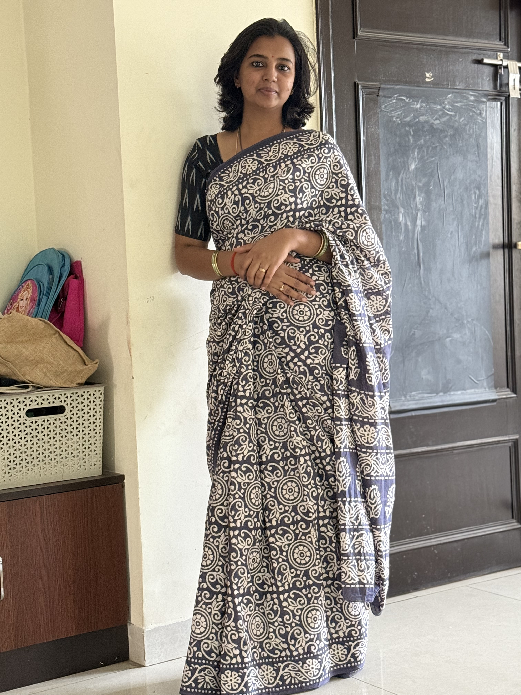
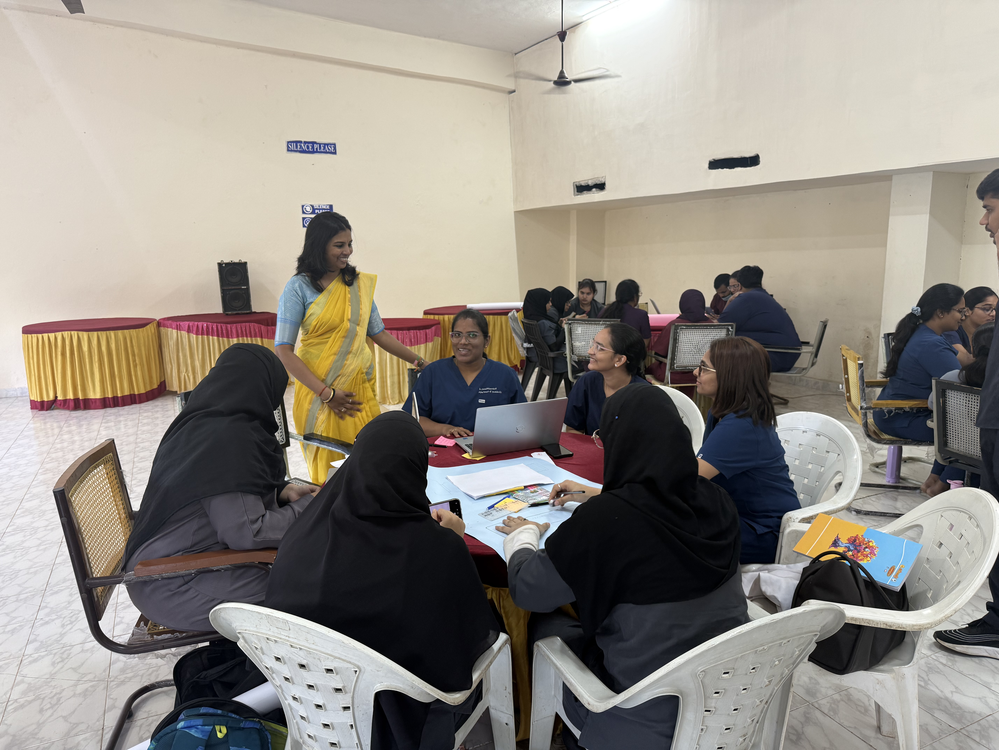
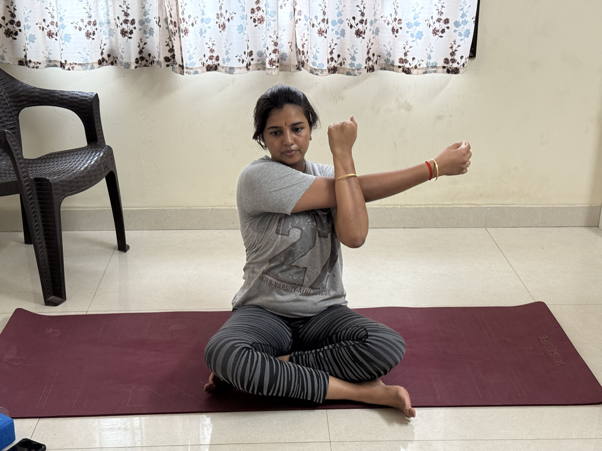
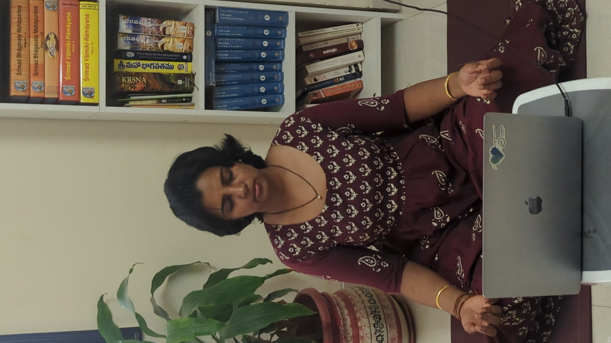
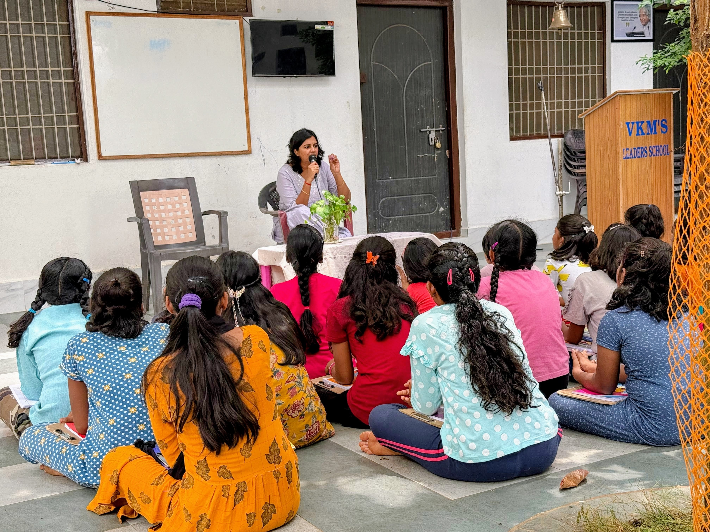

PCOS · Obesity · Metabolic Reset · Diabetes · Prenatal · Postnatal. Every program combines personalised yoga, science-backed nutrition, a curated community of 20 women, and direct 1:1 coaching from Dr. Raga Deepthi.
Jump to your program
A thoughtful, clinical process — because real transformation starts with real understanding.
Pay ₹1,000 to book your initial 1:1 session with Dr. Raga Deepthi — online or in-person.
Dr. Raga listens to your complete health history, symptoms, lifestyle, and goals — with patience and without judgment.
Dr. Raga recommends specific lab tests to identify the root cause — hormonal, metabolic, gut, or nutritional — no guesswork.
Based on your test results, Dr. Raga builds a fully personalised 3-month program — yoga, diet, supplements, and community.
Program investment is determined after your consultation and test results — ensuring you only pay for what's right for your specific condition and needs. There are no hidden fees.
Programs are available online across India and internationally. Payment plans available on request.
Exact pricing is shared after your consultation — once Dr. Raga understands your condition and designs your personalised plan. No surprises.
A comprehensive group program for women with PCOS — combining personalised yoga for hormonal balance, anti-inflammatory nutrition, microbiome restoration, and cycle tracking. Guided by Dr. Raga Deepthi's metabolic expertise and deep personal understanding of hormonal challenges.
Metabolic and hormonal baseline assessment. Introduction to anti-inflammatory eating. Gentle yoga for adrenal and hormonal support. Understanding your cycle.
Gut microbiome restoration protocol. Insulin sensitising nutrition. Progressive yoga for pelvic health. Supplement guidance. Community accountability.
Cycle syncing your lifestyle. Advanced nutritional strategies. Stress modulation and sleep optimisation. Creating your personal PCOS management plan.

Women diagnosed with PCOS, or experiencing irregular periods, unexplained weight gain, acne, hair loss, or fertility challenges. No prior yoga experience required.
Designed for women who have tried everything and failed — because this program addresses WHY: hormonal fat, insulin resistance, gut dysbiosis, and emotional eating patterns. Science-first, compassion-led. This is the only weight program built for women's unique biology.
Metabolic assessment identifying YOUR driver — hormonal, insulin-related, gut, or stress. Low-glycemic nutrition foundations. Movement introduction. Emotional relationship with food exploration.
Gut microbiome restoration. Progressive strength yoga and post-meal walks. Advanced nutritional strategies for fat burning. Cortisol and sleep optimisation. Community accountability sessions.
Building your personal maintenance protocol. Navigating social eating and travel. Advanced yoga practice. Long-term metabolic health strategies. Celebrating your transformation.

Women struggling with weight despite dieting, women with hormonal weight gain (PCOS, thyroid, menopause), and women seeking pregnancy or postpartum weight support.
"After 3 months I lost almost 15 kgs in a healthy way. The most happiest thing is that I conceived after following your diet plan."
— Divyasree, Diet Counselling Client
For women experiencing fatigue, brain fog, bloating, and hormonal disruption — without a clear diagnosis. This program resets your metabolism, restores gut health, rebalances hormones, and rebuilds energy from the cellular level up.
Remove inflammatory foods and gut disruptors. Introduce restorative eating patterns. Begin yin yoga and breathwork for nervous system regulation. Sleep and stress baseline assessment.
Targeted gut healing protocol. Progressive yoga practice. Hormone-supportive nutrition. Meditation for HPA axis regulation. Supplement optimisation based on individual needs.
Personalised long-term metabolic protocol. Advanced yoga and mindfulness practice. Building sustainable daily rhythms. Community celebration and ongoing support planning.

Women feeling "off" but with no clear diagnosis. Symptoms: persistent fatigue, bloating, brain fog, unexplained weight gain, hormonal imbalance, poor sleep, or low immunity.
For women living with Type 2 diabetes, prediabetes, or PCOS-related insulin resistance. This program combines PhD-level metabolic science with personalised nutrition, therapeutic yoga, and evidence-based supplementation to achieve sustainable blood sugar control — and in many cases, reversal.
Comprehensive blood sugar and insulin profiling. Remove glycaemic triggers. Introduce low-GI, anti-inflammatory eating. Begin restorative yoga to reduce cortisol — a key driver of blood sugar dysregulation.
Progressive resistance-friendly yoga to build muscle insulin sensitivity. Therapeutic meal timing and post-meal movement protocols. Targeted supplementation (berberine, magnesium, chromium) based on individual labs.
Advanced metabolic optimisation. Personalised long-term blood sugar management plan. Stress resilience and sleep optimisation. Community celebration and ongoing monitoring guidance.

Women with Type 2 diabetes, prediabetes, or PCOS-related insulin resistance. Also ideal for women with a strong family history of diabetes who want to prevent progression through lifestyle medicine.
You are growing a life. Your body has never needed more — or been more misunderstood. This program gives you trimester-by-trimester nutrition science, safe and empowering prenatal yoga, and the community of other mothers who truly understand what you're going through. Because a healthy pregnancy is the foundation of a healthy child.
Comprehensive prenatal nutrition baseline. Gestational diabetes risk screening. Gentle restorative yoga (safe for all trimesters). Manage morning sickness, nausea, and first-trimester fatigue with evidence-based food and breathwork strategies.
Optimal fetal nutrition — iron, folate, DHA, calcium, and Vitamin D protocols tailored to your labs. Progressive prenatal yoga to manage back pain, oedema, and pelvic discomfort. Gestational weight management without restriction.
Breathing and movement techniques for labour. Pelvic floor yoga for easier birth. Managing late-pregnancy discomfort and anxiety. Postnatal care planning — so you're not starting from zero after delivery.

Any pregnant woman — from confirmed pregnancy through the third trimester — who wants personalised nutrition science, safe yoga, and community support. Especially valuable for women with PCOS, gestational diabetes risk, previous pregnancy loss, or thyroid conditions.
Every yoga session, nutrition protocol, and supplement recommendation in this program is reviewed for pregnancy safety. We work alongside your OB-GYN — not instead of them.
You grew a human being. Your body did something extraordinary — and now it deserves extraordinary care. Postpartum hormone crashes, hair loss, stubborn weight, exhaustion, and mood changes are not "just motherhood." They are real, treatable, and deeply misunderstood. This program gives you the science-backed recovery your body earned.
Gentle postnatal yoga (week 6+ safe). Anti-inflammatory, hormone-supportive nutrition. Addressing the postpartum estrogen and progesterone crash. Sleep-optimised feeding strategies. Baby blues vs. postpartum depression — recognising and responding.
Progressive core restoration (safe diastasis recti protocol). Postnatal nutrition for energy and — if breastfeeding — optimal milk production. Addressing postpartum thyroid dysfunction and hair loss. Iron and micronutrient replenishment protocol.
Sustainable weight management — when your body is ready, not before. Strength restoration yoga. Body image healing and identity work. Community sisterhood of mothers on the same journey. Building a sustainable wellbeing rhythm around new motherhood.
New mothers from 6 weeks to 18 months postpartum. Ideal for women experiencing postpartum weight retention, fatigue, hair loss, hormonal mood changes, or simply feeling disconnected from their own body after birth.
"The postnatal period is one of the most hormonally turbulent times in a woman's life — and one of the most under-supported. You are not 'bouncing back.' You are healing forward."
Each batch is limited to 20 women for personalised attention. Spots fill quickly.
Prefer individual sessions? Book a standalone 1:1 consultation for personalised diet guidance, functional wellness coaching, or a specific health concern. No 3-month commitment required.